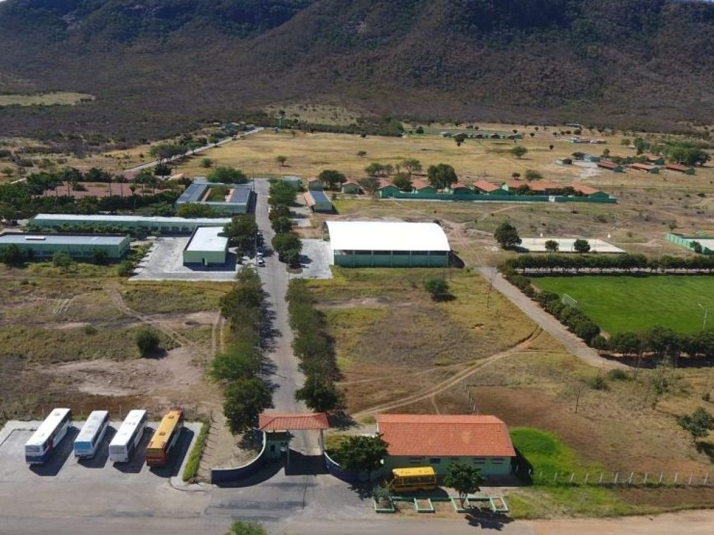

O IF Baiano
O Instituto Federal de Educação, Ciência e Tecnologia Baiano (IF Baiano) foi criado em 2008 e é uma instituição de Ensino Médio e Superior, focado na Educação Profissional e Tecnológica. Sua proposta é levar alternativas às demandas da comunidade, através de ensino, pesquisa e extensão, articulando-se com o mundo do trabalho.
Assim, egressos do Ensino Fundamental, Médio ou Superior têm a possibilidade de estudar no Instituto através de cursos técnicos – Integrados, Subsequentes (presenciais e EaD), Proeja – de graduação e pós-graduação ou ainda fazer cursos de capacitação ofertados, através de Programas de Extensão.
